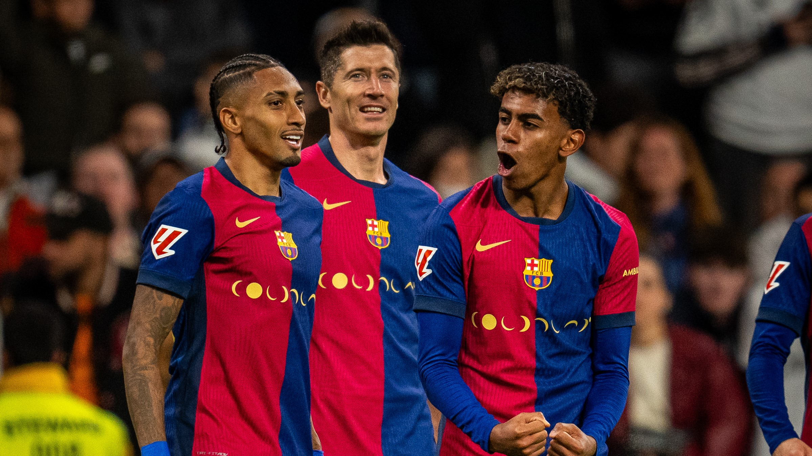

EL TRIDENTE REGRESA
El tridente que apareció de manera insospechada la temporada pasada, pero que parecía haberse quedado en cosa de una temporada, renació con brillantez el miércoles contra el Newcastle. Lamine, Raphinha y la aparición estelar de Lewandowski en la segunda parte dispararon al Barça hacia cuartos de final de la Champions y, sobre todo, mandó un mensaje esperanzador. Todavía son capaces de hacer grandes cosas.
Capaces de sumar 94 goles y repartir hasta 54 asistencias la temporada pasada, los números del tridente habían caído en picado en este ejercicio. Sólo Lamine, que ya firma números parecidos a los de la temporada 2024-25 (entonces hizo 18 goles y 25 asistencias y este curso ya suma 21+16) aguantaba el ritmo. Raphinha, con 19+8, está lejos del extraterrestre 34+26 de la temporada pasada. Y Lewandowski lleva 26 goles menos: de los 46 del curso 2024-25, a los 16 de ahora.
Puede, sin embargo, que el tridente haya llegado a tiempo de resultar definitivo en el tramo final. Sería la mejor noticia para Hansi Flick, que el miércoles presenció lo que exactamente quiere ver: tres jugadores que se encontraban en el césped como hace un año. Lamine, metido entre líneas, localizó a Raphinha en la acción del 1-0. El brasileño asistió a Lewandowski en el córner del 5-2; y el ‘10’ leyó con maestría la del desmarque del polaco en la acción del 6-2...
